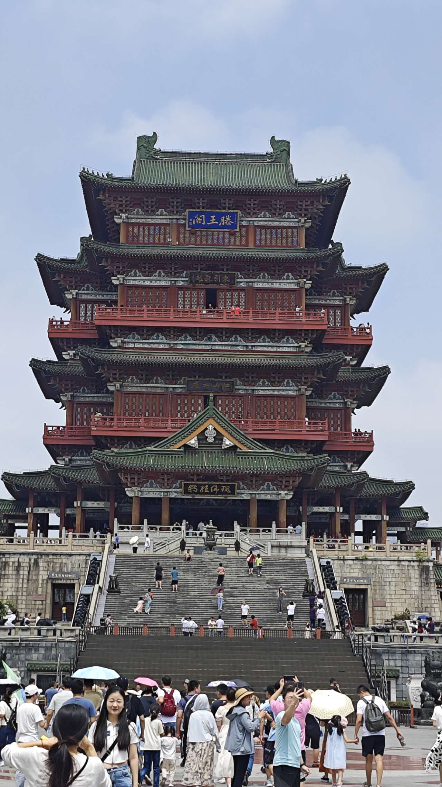
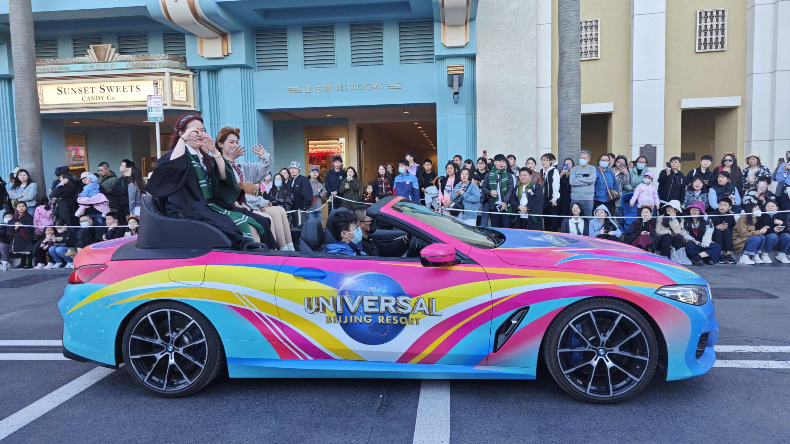
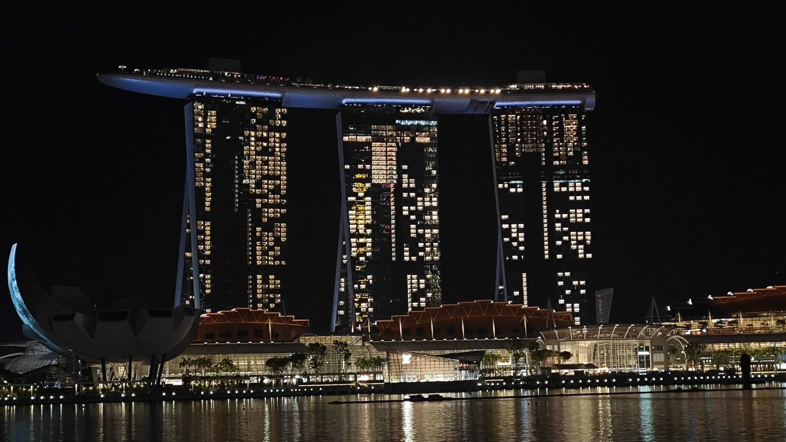
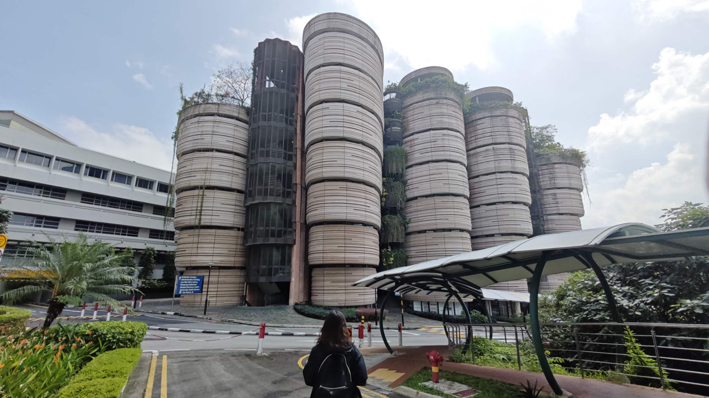
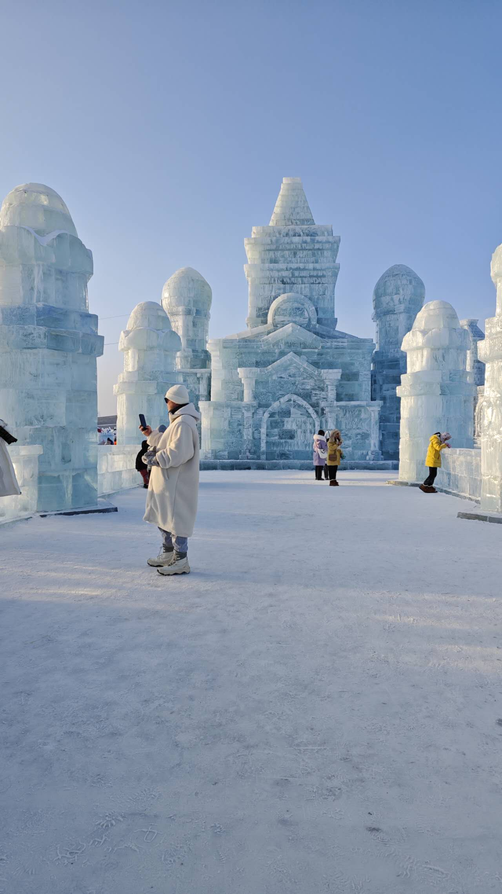

Travel
Pavilion of Prince Teng in China
The Pavilion of Prince Teng is a building in the North West of the city of Nanchang, in Jiangxi province, China, on the east bank of the Gan River and is one of the Three Great Towers of southern China. The other two are the Yueyang Tower and the Yellow Crane Pavilion. It has been destroyed and rebuilt many times over its history. The present building was rebuilt in 1989 on the original site. The rebuilding plan was devised by the architect Liang Sicheng, and now the Pavilion of Prince Teng is the landmark of Nanchang. There are nine floors in total. The main architectural structure is in Song dynasty wooden style, showing the magnificence of the Pavilion.
The parade of floats in Universal
The parade of floats at Universal Studios Beijing is an unforgettable visual feast, making people feel as if they have entered the magical world of those animated movies. Using storytelling to create immersive experiences is a feature of Universal Studios. It's not uncommon for seasonal performances or activities featuring collaborative IPs to be seen in other Universal Studios around the world, especially for Beijing Universal, where the seasons are more distinct. The goal is to constantly enhance the visitor experience and keep them coming back for more.
Marina Bay Sands in Singapore
Marina Bay Sands Hotel is located in Marina Bay, consisting of three interconnected hotel towers with a spectacular sky garden on top. The hotel features a "floating" crystal pavilion, a lotus-shaped museum, retail shops selling various advanced products and international luxury brands, exquisite and fashionable celebrity chef restaurants, endless entertainment options including cinemas and vibrant nightclubs, as well as a Las Vegas-style casino. Business travelers can also enjoy a variety of state-of-the-art facilities for meetings, incentives, conferences and exhibitions (MICE), flexible and efficient exhibition halls, as well as a conference center that can accommodate over 45,000 delegates. Marina Bay Sands offers the perfect blend of business and leisure in one destination to create an unparalleled unique experience.
The Hive in Nanyang Technological University in Singapore
The Hive is one of the iconic buildings of Nanyang Technological University. It serves as the school's teaching center and is also a landmark in Singapore, known as the "Tower of Wisdom." The building's design is highly modern, with a unique appearance and innovative concepts, affectionately referred to as "xiaolongbao" by many people, receiving widespread praise.
Ice sculpture Harbin Ice and Snow World, China
Harbin Ice and Snow World is exquisitely carved by natural ice and snow and creative sculptors. The entire venue covers a vast area, including dozens of ice and snow architectural complexes, sculptures, and other artworks. Among these buildings are castles and palaces that seem to come from fairy tales, modern architecture and roads, as well as various sculptures and installation art. All of these structures are made of transparent ice blocks and white snow piles, creating a unique and charming kingdom of ice and snow.